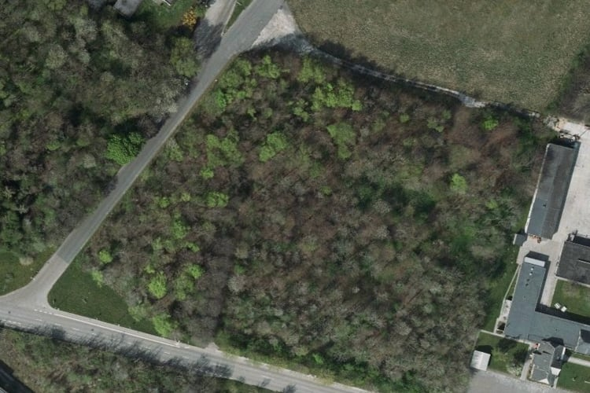
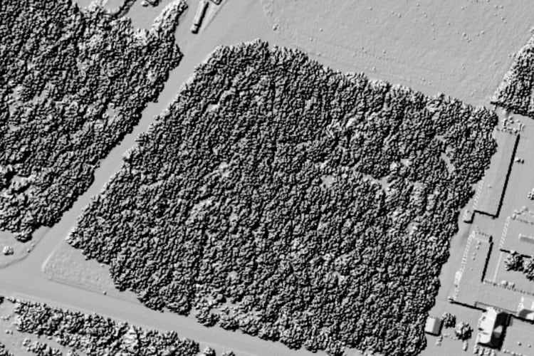
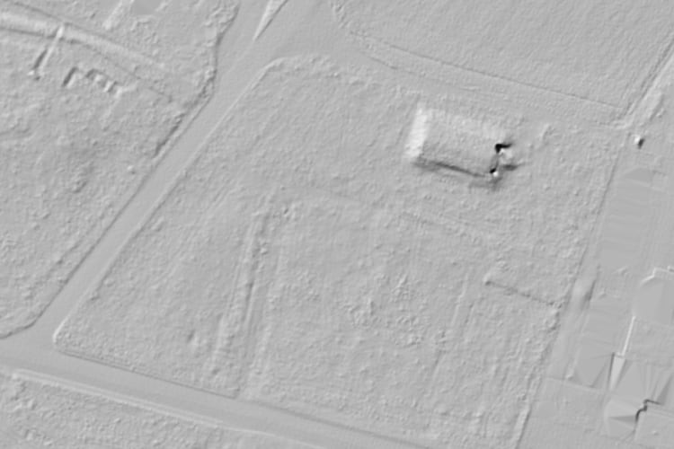
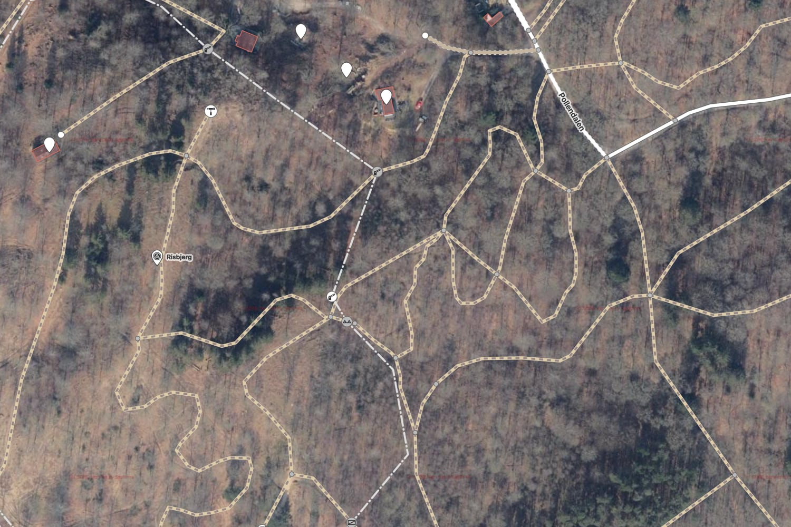
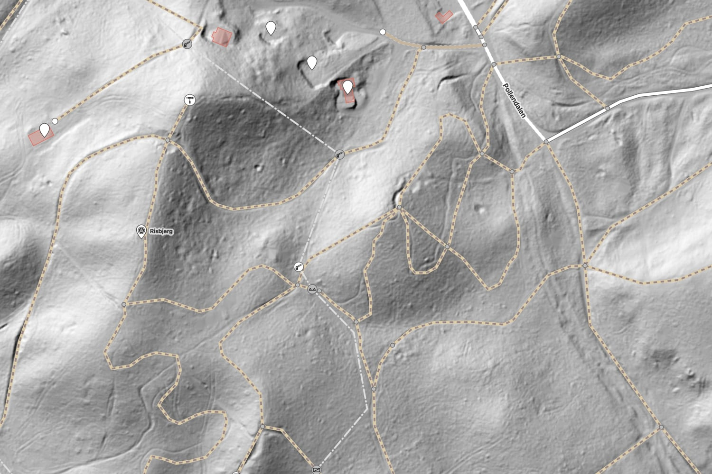

Mapping with LIDAR data
Foliage sucks
Urban trees, especially big dense ones, are becoming a rare sight in our environment. They provide habitat for many species, offer shade in the summer, combat the heat island effect, reduce stormwater pollution, filter air, absorb noise and are beneficial for our mental health. Despite all these superb benefits I have one bone to pick with them—they block my view from above.

The area you see above is a natural=wood for OSM mapper. There are some quirks on how you map an area like this. OSM wiki mentions six different approaches. Irrespective of the approach taken, one question remains: what is under the trees?
If you are lucky, there may be a different map source where the imagery is taken in the winter months, with fewer leaves on the trees. If you are mapping an urban place, you may see GPS traces taken by joggers. That will give you an idea about path locations.
Enter LIDAR. LIDAR generates a 3D representation of the scanned area using laser pulses. The first practical LIDAR systems date back to the 60s, but until recently, LIDAR was limited in applications. Recent advancements in data processing, have made its use more common.
It is now used, for example, to archive heritage sites so that they can be viewed by the future generations. They are also used in agriculture for crop monitoring.
LIDAR became more widely known by the general public when it was used to discover artifacts of ancient civilisations. These artifacts were, until now, hidden under the canopy of the rainforest. LIDAR scanning revealed a network of settlements within the Amazon forest. Similar to Amazon surveyors, we can now use LIDAR data to reveal hidden objects under the canopy.


Above, you see two images of the same forest area, as above, but seen by the LIDAR system. The second image reveals a structure underneath the foliage. In this case, it is a Second World War era hospital bunker that is in the area of a past airport. It is not visible from the air. It is not visible from the road. I only stumbled upon it thanks to geocaching.
But how does LIDAR see under the canopy?
How LIDAR works
A LIDAR detector is flown overhead a terrain and short laser pulses are emitted towards the ground. The system then measures the distance to the surface that the laser targeted. Knowing the position of the senor and laser pulse direction the LIDAR can calculate the position of the object hit by the laser pulse. A 3D point cloud is then slowly built while the laser scans the terrain.
Sometimes, the laser pulse will hit a leaf. Other times, it will accidentally find an opening between leaves and reach the ground. The resulting point cloud then consists of the points that hit the ground surface and points that hit random leaves. By filtering points that are as high and as low as possible, we can then create two images: one including the foliage and one containing only the ground and solid objects.
Where LIDAR shines
For OSM mappers, LIDAR is especially useful for discovering and aligning paths in woody areas. The image below looks like a well-mapped nature area with many criss-crossing paths.

Footpaths and bike tracks form long troughs on forest beds and are clearly visible on LIDAR imagery. Notice below how many paths are misaligned or just missing.

Other geo features that are clearly visible on LIDAR images are water bodies, streams, embankments and ditches.
Not all countries have LIDAR data available. I have used Denmark as an example of excelent coverage. The source for the maps used is Styrelsen for Dataforsyning og Infrastruktur (SDFE aerial imagery, SDFE surface shadow map (40 cm) and SDFE terrain shadow map (40 cm)).
I hope you can use this technique to improve OpenStreetMap. If you are not an OSM editor, you can still use the LIDAR imagery to discover hidden gems in your surrounding area.